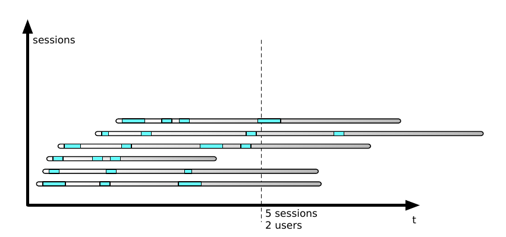

Release it! Second edition
Faults and cracks:
- Fault. A condition that creates an incorrect internal state in your software. A fault may be due to a latent bug that gets triggered, or it may be due to an unchecked condition at a boundary or external interface.
- Error. Visibly incorrect behavior. When your trading system suddenly buys ten billion dollars of Pokemon futures, that is an error.
- Failure. An unresponsive system. When a system doesn’t respond, we say it has failed. Failure is in the eye of the beholder. A computer may have the power on but not respond to any requests.
- Triggering a fault opens the crack. Faults become errors, and errors provoke failures. That’s how the cracks propagate.
- Tight coupling accelerates cracks.
Stability antipatterns:
- Integration points
- Every integration point will eventually fail in some way, and you need to be prepared for that failure.
- Prepare for the many forms of failure.
- Know when to open up abstractions. Mechanism to peel off layers of abstractions. Wireshark
- Failures propagate quickly. Failure in a remote system quickly becomes your problem.
- Apply patterns to avert integration point problems. Circuit breaker, timeouts, decoupling middleware and handshaking
- Chain reactions
- Recognize that one server down jeopardizes the rest. No Single point of failure is not enough. It’s bad when remaining instances cannot handle the load.
- Hunt for resource leaks.
- Hunt for obscure timing bugs.
- Use Autoscaling.
- Defend with Bulkheads.
- Blocking threads
- Recall that the Blocked Threads antipattern is the proximate cause of most failures.
- Scrutinize resource pools. Like Cascading Failures, the Blocked Threads antipattern usually happens around resource pools, particularly database connection pools. A deadlock in the database can cause connections to be lost forever, and so can incorrect exception handling.
- Use proven primitives
- Defend with timeouts. No-timeout version of a function is “CheckoutAndMaybeKillMySystem”.
- Beware the code you cannot see
- Self-denial attacks.
- Keep the lines of communication open.
- Protect shared resources. (No exponential backend processing because of bug on frontend)
- Expect rapid redistribution of any cool or valuable offer.
- Scaling effects
- Examine production versus QA environments to spot Scaling Effects.
- Watch out for point-to-point communication.
- Watch out for shared resources.
- Unbalanced capacities
- Examine server and thread counts.
- Observe near Scaling Effects and users.
- Virtualize QA and scale it up.
- Stress both sides of the interface.
- Dogpile (american football)
- Dogpiles force you to spend too much to handle peak demand.
- Use random clock slew to diffuse the demand.
- Use increasing backoff times to avoid pulsing.
- Force multiplier.
- Ask for help before causing havoc. Infrastructure management tools can make very large impacts very quickly. Build limiters and safeguards into them so they won’t destroy your whole system at once.
- Beware of lag time and momentum.
- Beware of illusions and superstitions. Control systems sense the environment, but they can be fooled.
- Slow responses
- Slow Responses trigger Cascading Failures.
- For websites, Slow Responses cause more traffic.
- Consider Fail Fast. If slow responses are worse than no response, the worst must surely be a slow failure response. Fail fast.
- Hunt for memory leaks or resource contention.
- Unbounded result sets
- Use realistic data volumes.
- Paginate at the front end. Do not put too much trust in your database, always LIMIT your queries. Same for frontend and huge json in response.
- Don’t rely on the data producers.
- Put limits into other application-level protocols.
Health checks should be more than just “yup, it’s running.” It should report at least the following:
- The host IP address or addresses
- The version number of the runtime or interpreter (Ruby, Python, JVM, .Net, Go, and so on)
- The application version or commit ID
- Whether the instance is accepting work
- The status of connection pools, caches, and circuit breakers
Useful metrics:
- Traffic indicators
- Page requests, page requests total, transaction counts, concurrent sessions
- Business transaction, for each type
- Number processed, number aborted, dollar value, transaction aging,conversion rate, completion rate
- Users
- Demographics or classification, technographics, percentage of users who are registered, number of users, usage patterns, errors encountered, successful logins, unsuccessful logins
- Resource pool health
- Enabled state, total resources (as applied to connection pools, worker thread pools, and any other resource pools), resources checked out, high-water mark, number of resources created, number of resources destroyed,number of times checked out, number of threads blocked waiting for a resource, number of times a thread has blocked waiting
- Database connection health
- Number of SQLExceptions thrown, number of queries, average response time to queries
- Data consumption
- Number of entities or rows present, footprint in memory and on disk
- Integration point health
- State of circuit breaker, number of timeouts, number of requests, average response time, number of good responses, number of network errors, number of protocol errors, number of application errors, actual IP address of the remote endpoint, current number of concurrent requests, concurrent request high-water mark
- Cache health
- Items in cache, memory used by cache, cache hit rate, items flushed by garbage collector, configured upper limit, time spent creating items
All of the counters have an implied time component. You should read them as if they all end with “in the last n minutes” or “since the last reset.”
A few pointers about configuration services:
- Make sure your instances can start without the configuration service.
- Make sure your instances don’t stop working when configuration is unreachable.
- Make sure that a partitioned configuration node doesn’t have the ability to shut down the world.
- Replicate across geographic regions.
Continuous Deployment
Between the time a developer commits code to the repository and the time it runs in production, code is a pure liability. Undeployed code is unfinished inventory. It has unknown bugs. It may break scaling or cause production downtime. It might be a great implementation of a feature nobody wants. Until you push it to production, you can’t be sure. The idea of continuous deployment is to reduce that delay as much as possible to minimize the liability of undeployed code. See vicious cycle from Site Reliability Workbook. (If it hurts do it more often).
Schemaless Databases
- First approach. Translation pipeline
- The second approach is to write a migration routine that you run across your entire database during deployment. That will work well in the early stages, while your data is still small.
- The third approach: “trickle, then batch”. In this strategy, we don’t apply one massive migration to all documents. Rather, we add some conditional code in the new version that migrates documents as they are touched.
API Changes
What we call an “API” is really a layered stack of agreements between pieces of software. Some of the agreements are so fundamental (we use TCP/IP most of the time, for example).
The consumer and provider must share a number of additional agreements in order to communicate. We can think of these as agreements in the following situations:
- Connection handshaking and duration
- Request framing
- Content encoding
- Message syntax
- Message semantics
- Authorization and authentication
List of changes that would break agreements:
- Rejecting a network protocol that previously worked
- Rejecting request framing or content encoding that previously worked
- Rejecting request syntax that previously worked
- Rejecting request routing (whether URL or queue) that previously worked
- Adding required fields to the request
- Forbidding optional information in the request that was allowed before
- Removing information from the response that was previously guaranteed
- Requiring an increased level of authorization
The following changes are always safe:
- Require a subset of the previously required parameters
- Accept a superset of the previously accepted parameters
- Return a superset of the previously returned values
- Enforce a subset of the previously required constraints on the parameters
A tough problem arises that we need to address when applying the Robustness Principle, though. There may be a gap between what we say our service accepts and what it really accepts. For instance, suppose a service takes JSON payloads with a “url” field. You discover that the input is not validated as a URL, but just received as a string and stored in the database as a string. You want to add some validation to check that the value is a legitimate URL, maybe with a regular expression. Bad news: the service now rejects requests that it previously accepted. That is a breaking change.
But wait a minute! The documentation said to pass in a URL. Anything else is bad input and the behavior is undefined. It could do absolutely anything. The classic definition of “undefined behavior” for a function means it may decide to format your hard drive. It doesn’t matter. As soon as the service went live, its implementation becomes the de facto specification.
It’s common to find gaps like these between the documented protocol and what the software actually expects. I like to use generative testing techniques to find these gaps before releasing the software. But once the protocol is live, what should you do? Can you tighten up the implementation to match the documentation? No. The Robustness Principle says we have no choice but to keep accepting the input.
HTTP API versioning
HTTP gives us several options to deal with breaking changes. None are beautiful.
- Add a version discriminator to the URL, either as a prefix or a query parameter. This is the most common approach in practice. Advantages: It’s easy to route to the correct behavior. URLs can be shared, stored, and emailed without requiring any special handling. You can also query your logs to see how many consumers are using each version over time. For the consumer, a quick glance will confirm which version they are using. Disadvantage: Different representations of the same entity seem like different resources, which is a big no-no in the REST world.
- Use the “Accept” header on GET requests to indicate the desired version. Use the “Content-Type” header on PUT and POST to indicate the version being sent. For example, we can define a media type “application/vnd.lendzit.loan-request.v1” and a new media type “application/vnd.lendzit.loan-request.v2” for our versions. If a client fails to specify a desired version, it gets the default (the first nondeprecated version.) Advantage: Clients can upgrade without changing routes because any URLs stored in databases will continue to work. Disadvantages: The URL alone is no longer enough. Generic media types like “application/json” and “text/xml” are no help at all. The client has to know that the special media types exist at all, and what the range of allowed media types are. Some frameworks support routing based on media type with varying degrees of difficulty.
- Use an application-specific custom header to indicate the desired version. We can define a header like “api-version.” Advantages: Complete flexibility, and it’s orthogonal to the media type and URL. Disadvantages: You’ll need to write routing helpers for your specific framework. This header is another piece of secret knowledge that must be shared with your consumers.
- For PUT and POST only, add a field in the request body to indicate the intended version. Advantages: No routing needed. Easy to implement. Disadvantage: Doesn’t cover all the cases we need.
In the end, I usually opt for putting something in the URL. A couple of benefits outweigh the drawbacks for me. First, the URL by itself is enough. A client doesn’t need any knowledge beyond that. Second, intermediaries like caches, proxies, and load balancers don’t need any special (read: error-prone) configuration. Matching on URL patterns is easy and well understood by everyone in operations. Specifying custom headers or having the devices parse media types to direct traffic one way or another is much more likely to break. This is particularly important to me when the next framework change, where I’d really like to have the new version running on a separate cluster.
Think globally and act locally
Like many places where our software intersects with the external environment, versioning is inherently messy. It will always remain a complex topic. I recommend a utilitarian philosophy. The net suffering in your organization is minimized if everyone thinks globally and acts locally. The alternative is an entire organization slowly grinding to a halt as every individual release gets tied down waiting for synchronized upgrades of its clients.
Sessions vs users

When you look at all of the active sessions, some of them are destined to expire without another request. The number of active sessions is one of the most important measurements about a web system, but don’t confuse it with counting users.
The Danger of Thrashing
Thrashing happens when your organization changes direction without taking the time to receive, process, and incorporate feedback. You may recognize it as constantly shifting development priorities or an unending series of crises.
We constantly encourage people to shorten cycle time and reduce the time between sensing and acting. But be careful not to shorten development cycle time so much that it’s faster than how quickly you get feedback from the environment.
In aviation, there’s an effect officially called “pilot-induced oscillation” and unofficially called “porpoising.” Suppose a pilot needs to raise the aircraft’s pitch. He pulls back on the stick, but there’s a long delay between when he moves the stick and when the plane moves, so he keeps pulling the stick back. Once the plane does change attitude, the nose goes up too far. So the pilot pushes the stick forward, but the same delay provokes him to overcontrol in the other direction. It’s called “porpoising” because the plane starts to leap up and dive down like a dolphin at SeaWorld. In our industry, “porpoising” is called thrashing. It happens when the feedback from the environment is slower than the rate of control changes. One effort will be partly completed when a whole new direction appears. It creates team confusion, unfinished work, and lost productivity.
To avoid thrashing, try to create a steady cadence of delivery and feedback. If one runs faster than the other, you could slow it down, but I wouldn’t recommend it! Instead, use the extra time to find ways to speed up the other process. For example, if development moves faster than feedback, don’t use the spare cycles to build dev tools that speed up deployment. Instead, build an experimentation platform to help speed up observation and decisions.
Costly releases
Releases should about as big an event as getting a haircut (or compiling a new kernel, for you gray-ponytailed UNIX hackers who don’t require haircuts).
The literature on agile methods, lean development, continuous delivery, and incremental funding all make a powerful case for frequent releases in terms of user delight and business value. With respect to production operations, however, there’s an added benefit of frequent releases. It forces you to get really good at doing releases and deployments.
A closed feedback loop is essential to improvement. The faster that feedback loop operates, the more accurate those improvements will be. This demands frequent releases. Frequent releases with incremental functionality also allow your company to outpace its competitors and set the agenda in the marketplace.
As commonly practiced, releases cost too much and introduce too much risk. The kind of manual effort and coordination I described previously is barely sustainable for three or four releases a year. It could never work for twenty a year. One solution—the easy but harmful one—is to slow down the release calendar. Like going to the dentist less frequently because it hurts, this response to the problem can only exacerbate the issue. The right response is to reduce the effort needed, remove people from the process, and make the
whole thing more automated and standardized.
In Continuous Delivery Jez Humble and Dave Farley describe a number of ways to deliver software continuously and at low risk.
Service Extintion
Paradoxically, the key to making evolutionary architecture work is failure. You have to try different approaches to similar problems and kill the ones that are less successful.
Suppose you have two ideas about promotions that will encourage users to register. You’re trying to decide between cross-site tracking bugs to zero in on highly interested users versus a blanket offer to everyone. The big service will accumulate complexity faster than the sum of two smaller services. That’s because it must also make decisions about routing and precedence (at a minimum.) Larger codebases are more likely to catch a case of “frameworkitis” and become overgeneralized. There’s a vicious cycle that comes into play: more code means it’s harder to change, so every piece of code needs to be more generalized, but that leads to more code. Also, a shared database means every change has a higher potential to disrupt.
There’s little isolation of failure domains here.
Instead of building a single “promotions service” as before, you could build two services that can each chime in when a new user hits your front end. In the next figure, each service makes a decision based on whatever user information is available.
Each promotion service handles just one dimension. The user offers still need a database, but maybe the page-based offers just require a table of page types embedded in the code. After all, if you can deploy code changes in a matter of minutes, do you really need to invest in content management? Just call your source code repo the content management repository.
It’s important to note that this doesn’t eliminate complexity. Some irreducible —even essential—complexity remains. It does portion the complexity into different codebases, though. Each one should be easier to maintain and prune, just as it’s easier to prune a bonsai juniper than a hundred-foot oak. Here, instead of making a single call, the consumer has to decide which of the services to call. It may need to issue calls in parallel and decide which response to use (if any arrive at all). One can further subdivide the complexity by adding an application-aware router between the caller and the offer services.
One service will probably outperform the other. (Though you need to define “outperform.” Is it based just on the conversion rate? Or is it based on customer acquisition cost versus lifetime profitability estimates?) What should you do with the laggard? There are only five choices you can make:
- Keep running both services, with all their attendant development and operational expenses.
- Take away funding from the successful one and use that money to make the unsuccessful one better.
- Retool the unsuccessful one to work in a different area where it isn’t head-to-head competing with the better one. Perhaps target a different user segment or a different part of the customer life cycle.
- Delete the unsuccessful one. Aim the developers at someplace where they can do something more valuable.
- Give up, shut down the whole company, and open a hot dog and doughnut shop in Fiji.
Team-Scale Autonomy
You’re probably familiar with the concept of the two-pizza team. This is Amazon founder and CEO Jeff Bezos’s rule that every team should be sized no bigger than you can feed with two large pizzas. It’s an important but misunderstood concept. It’s not just about having fewer people on a team. That does have its own benefit for communication.
A self-sufficient two-pizza team also means each team member has to cover more than one discipline. You can’t have a two-pizza team if you need a dedicated DBA, a front-end developer, an infrastructure guru, a back-end developer, a machine-learning expert, a product manager, a GUI designer, and so on.
The two-pizza team is about reducing external dependencies. Every dependency is like one of the Lilliputian’s ropes tying Gulliver to the beach. Each dependency thread may be simple to deal with on its own, but a thousand of them will keep you from breaking free.
System architecture
In “The Evolution of Useful Things”, Henry Petroski argues that the old dictum “Form follows function” is false. In its place, he offers the rule of design evolution, “Form follows failure.” That is, changes in the design of such commonplace things as forks and paper clips are motivated more by the things early designs do poorly than those things they do well. Not even the
humble paper clip sprang into existence in its present form. Each new attempt differs from its predecessor mainly in its attempts to correct flaws.
Targeting chaos
Randomness works well at the beginning because the search space for faults is densely populated. As you progress, the search space becomes more sparse, but not uniform. Some services, some network segments, and some combinations of state and request will still have latent killer bugs. But imagine trying to exhaustively search a 2n dimensional space, where n is the number of calls from service to service. In the worst case, if you have x services, there could be 2^(2x) possible faults to inject!
At some point, we can’t rely just on randomness. We need a way to devise more targeted injections. Humans can do that by thinking about how a successful request works. A top-level request generates a whole tree of calls that support it. Kick out one of the supports, and the request may succeed or it may fail. Either way we learn something. This is why it’s important to study all the times when faults happen without failures. The system did something to keep that fault from becoming a failure. We should learn from those happy outcomes, just as we learn from the negative ones.
Quotes, tips and tricks:
- SQL statement close can throw an exception. JDBC allows that.
- Services on the web are butterflies and spiders.
- Connections are abstractions, they exist only in host’s memory. Firewall can drop it. TCP stack is gonna spend 30 minutes resending packets until it realizes connection was dropped by a router.
- Liskov substitution principle says that if method is free of side effects then it should be free of them in derived classes
- Bad: net.Listen(“TCP”, “:8080”). Good: net.Listen(”spock.example.com:8080”)
- Little’s law
- It’s very difficult to debug in the container. That’s why you gonna need a lot of telemetry.
- Circuit breaker. Fail fast or “whoosh and no more house”. Fault density. The idea is to use a leaky bucket, it increases counter on fails and decreases it periodically in background thread
- Test harness. The test harness can be designed like an application server; it can have pluggable behavior for the tests that are related to the real application. A single framework for the test harness can be subclassed to implement any application-level protocol, or any perversion of the application-level protocol, necessary. Broadly speaking, a test harness leads toward “chaos engineering”.
- Every performance problem starts with a queue backing up somewhere.
- Apply Back Pressure within a system boundary. Across boundaries, look at load shedding instead. This is especially true when the Internet at large is your user base.
- Queues must be finite for response times to be finite. You only have a few options when a queue is full. All of them are unpleasant: drop data, refuse work, or block. Consumers must be careful not to block forever.
- Listen queue length. If you want to apply a heuristic, take your maximum wait time divided by mean processing time and add one. Multiply that by the number of request handling threads you have and bump it up by 50 percent. That’s a reasonable starting point.
- ZooKeeper is a “CP” system. (CAP-theorem)
- Systems can mature if, and only if, they have some degree of transparency
- “Data channel lifetime limit reached. Reset required”. They did failover of the database, but it was a debug message about encryption key soon will be vulnerable for discovery
- Logs should contain some ids. User Id, transaction Id, whatever. Something grepable.
- … to be available 24 by 7 by 365. That phrase has always bothered me. As an engineer, I expect it to either be “24 by 365” or be “24 by 7 by 52.”
- XSS (Cross Site Scripting) Prevention Cheat Sheet
- HSTS
- CSRF
- Containers give you small attack surface. When you include more and more parts of the operating system into it, attack surface grows.
- If a caller is not authorized to see the contents of a resource, it should be as if the resource doesn’t even exist.
- URLs are pointers. You can pass it around or you can dereference it.
- On the criteria to be used in decomposing systems